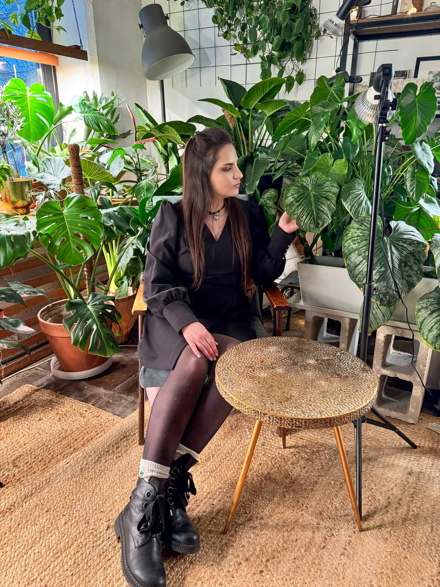
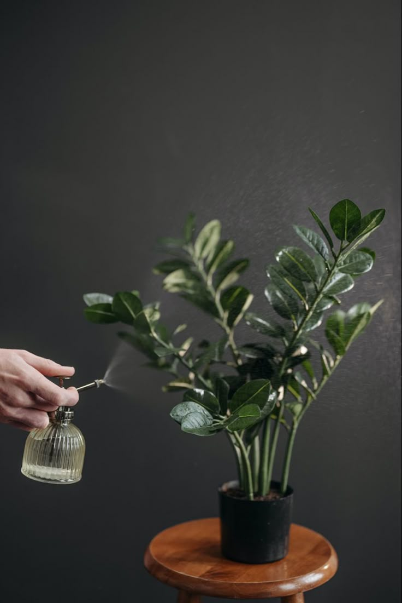
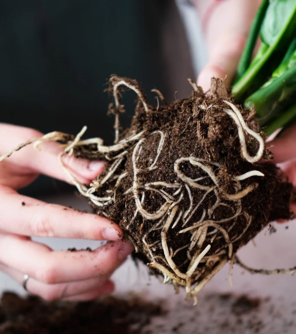
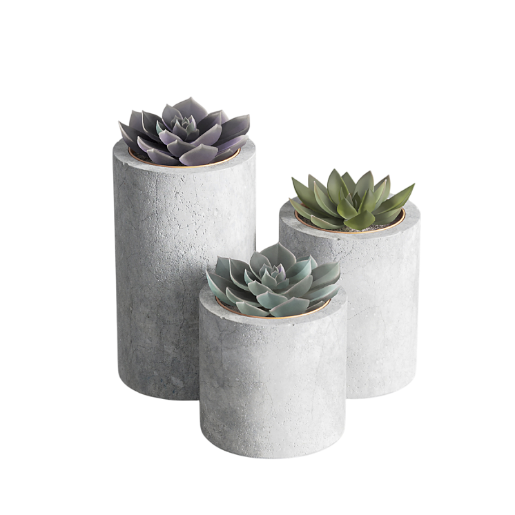
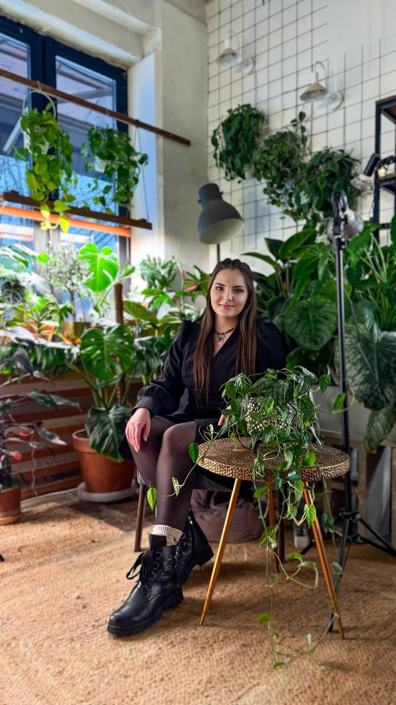

Желтеют листья
Листья желтеют один за другим — и неясно, перелив это, свет или что-то серьёзнее.
Mary Blooms plants
PDF-шпаргалка · бесплатно · в Telegram
Бесплатная PDF-шпаргалка: что проверить в первые дни и какие ошибки ухода чаще всего убивают растения — без десятка советов из интернета.
Бесплатно · откройте бота и нажмите Start

Листья желтеют один за другим — и неясно, перелив это, свет или что-то серьёзнее.

Коричневые или светлые пятна — и каждый совет в сети говорит разное.

Прошли недели, а новых листьев нет — непонятно, ждать или уже что-то менять.
Поймёте, полив это, свет, грунт или что-то ещё — без десяти вкладок в Google.
Чек-лист вопросов, чтобы не пересадить и не перелить зря.
Увидите, что вы уже делаете не так — и что изменить в первую очередь.
Простой план: свет, полив, грунт — по шагам, без паники.
Нажмите кнопку, откройте бота в Telegram и нажмите Start — PDF придёт сразу. Бесплатно, без регистрации.
Бот Mary Blooms отправляет только бесплатную PDF-шпаргалку.


Я разбираюсь с теми же ситуациями, что и у вас: желтеют листья, появляются пятна, растение стоит на месте — а в интернете каждый советует своё.
Веду блог о комнатных растениях и делюсь понятными материалами по уходу. В Telegram-чате уже более 200 человек, которые разбираются с похожими проблемами.
В Telegram-сообществе Mary Blooms уже более 200 человек — делятся опытом, задают вопросы и разбирают похожие ситуации с комнатными растениями.
Присоединиться к Telegram-чату«Наконец поняла, почему моя монстера желтела. Шпаргалка дала чёткий план — растение ожило за две недели.»
— Анна, Минск
«Скачала шпаргалку из бота — наконец поняла, почему появились пятна и что проверить в первую очередь.»
— Екатерина
«Думала, что растение погибает. Шпаргалка помогла найти ошибку в поливе — теперь пошли новые листья.»
— Ольга
PDF бесплатно в Telegram — нажмите Start в боте, и файл придёт за несколько секунд.
Получить шпаргалку в Telegram